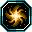
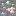
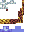

Tensura Neo Otherworld
เริ่มผจญภัยต่างโลก
คู่มือครบทุกเรื่อง ตั้งแต่สกิล เควส ม็อบ บอส แร่ ไปจนถึงมิติ อ่านจบก็เล่นเป็น ทุกหัวข้อมีอ้างอิงจากไฟล์จริงในเกม
เริ่มด่วน 5 นาที
- เลือกเผ่า 1 ใน 33 เผ่า
- กด B แล้วใส่สกิลสีเทาลงช่อง จากนั้นกด Z / X / C เพื่อเรียน
- ฆ่ามอนเพื่อเก็บ EP (ได้ 3% ของเหยื่อ)
- EP 2,000 ปลด Telepathy, 3,000 ปลด Strength, 5,000 ปลด Coercion
- ขุด Magic Ore
 ด้วย Netherite ขึ้นไป
ด้วย Netherite ขึ้นไป
เลือกหัวข้อ

เริ่มเล่น 5 นาที
Getting Started: เผ่า ปุ่ม EP milestone
Abilities
Common/Extra/Unique/Resistance/Magic/Ultimate วิธีปลด
เผ่า 33
Races + สายอีโว EP/ของ ทุกขั้น

ม็อบ / เรทเกิด
ถิ่นไบโอม เรท 1 in X และตัวแรร์

ดรอป
75 ม็อบดรอปอะไร เรทกี่ % ของอีโวอยู่ไหน

สกิลม็อบ
76 ตัวมีสกิลอะไรบ้าง ไว้ล่า Predator
บล็อก
เตา โต๊ะตี แท่นวาร์ป Engine
เกียร์
สูตรผสมโลหะจริง + ตีเกียร์ตาม tier
อาวุธ
251 ชิ้น เกณฑ์ EP + สายอีโวเกียร์
อาหาร
85 เมนู Gourmet ค่า EP/MP/AP จริง

แร่ / วัสดุ
Magic Ore สูตรผสม Low → Pure → Mithril

บอส / มิติ
วิธีเสก ของดรอป และประตูมิติ
มิติ
Labyrinth/Hell/Paths/Twilight วิธีเข้าทุกมิติ
Mechanics
EP/Magicule/Soul/Naming/Guild/Labyrinth
โครงสร้าง & ไบโอม
Labyrinth หมู่บ้าน หอคอย Ancient Forest
คำสั่ง
/tensura /evolve gamerule ที่ใช้บ่อย
Config
ไฟล์ config ค่าสำคัญอ้างบรรทัดจริง
แก้แครช
Ticking horse, Backpack mismatch, ปุ่มชน
FAQ
คำถามโดนถามซ้ำ ตอบสั้นพร้อมลิงก์
ระบบสำคัญ
กิลด์ การตั้งชื่อ Demon Lord และ Mechanics

เควส
เส้นหลัก EP และ 7 เควสที่ห้ามข้าม

ไอเทม / อีโว
ของอีโวรายเผ่า และเลือด Essence
ค่าหลัก 3 อย่าง
EP
- หาจาก
- ฆ่ามอน
- ใช้กับ
- ปลดสกิล / อีโว / เข้าโบสถ์ 5M
Magicule
- หาจาก
- ฆ่า / รีเจน / โพชัน
- ใช้กับ
- ร่าย / ผสมของ / เสกบอส
Soul
- หาจาก
- ฆ่ามอน EP สูง
- ใช้กับ
- ตื่น Demon Lord 10k